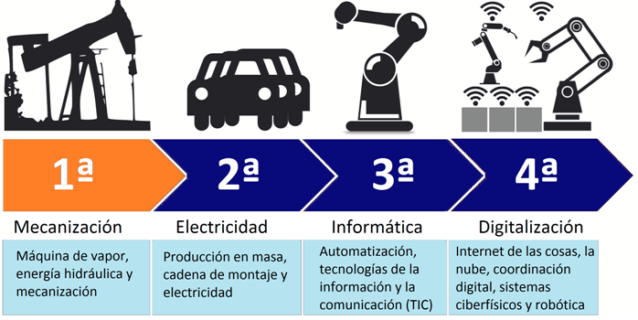

Basicamente una revolucion industrial es el proceso de
transformacion economica, social y tecnologica en la historia
de la humanidad, y como bien sabemos fue la maquina de vapor
quien empezo a cambiar el mundo a finales del siglo XVII y a
partir de este momento inicio la primera revolucion industrial.
Etapas de la revolucion industrial:

| Pos | Contras |
|---|---|
| Mejora de la productividad | Velocidad de los cambios |
| Mas seguridad | Incremento de los residuos |
| Aumento de la competitividad empresarial | Desigualdades sociales |